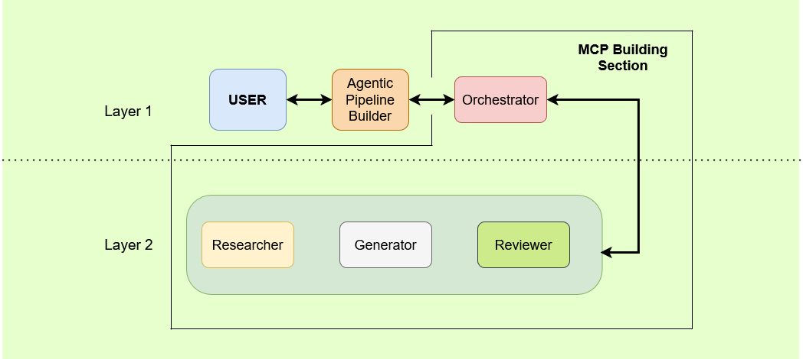

Industrial data pipelines are essential for transforming heterogeneous shop-floor data into usable information, yet their engineering remains predominantly manual and difficult to reuse across changing manufacturing environments. Engineers must repeatedly interpret asset capabilities, redefine data transformations, configure storage and processing services, and maintain these configurations as industrial systems evolve. This lack of machine-interpretable pipeline models restricts interoperability, increases deployment effort, and limits the adaptability expected from Industry 4.0 systems. This paper presents an Asset Administration Shell (AAS) approach for representing, generating, and deploying industrial data pipelines. First, it extends existing data management AAS submodels with a reusable data-pipeline model structured around collection, integration, preprocessing, storage, processing, and utilization stages. Second, it introduces an agentic workflow that interprets AAS-described assets through an AAS Model Context Protocol server. Third, it formulates pipeline configurations, validates execution plans with human supervision, and deploys the required software components. A containerized prototype demonstrates the creation, deployment, reuse, and extension of pipelines connecting robotic, messaging, storage, and visualization components. By treating data pipelines as first-class AAS artefacts, the proposed approach establishes a semantic foundation for more interoperable, reusable, and human-supervised industrial data engineering.
The system follows a two-layer agentic architecture divided into an Agentic Pipeline Builder and an MCP Building Section.
